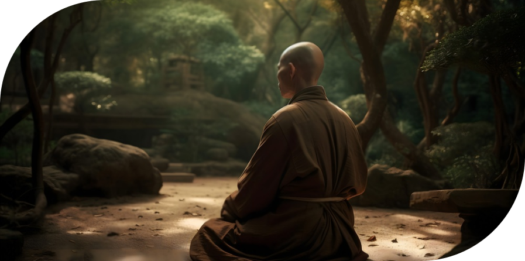
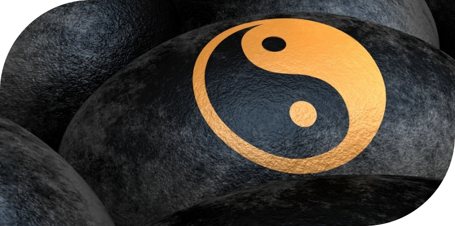
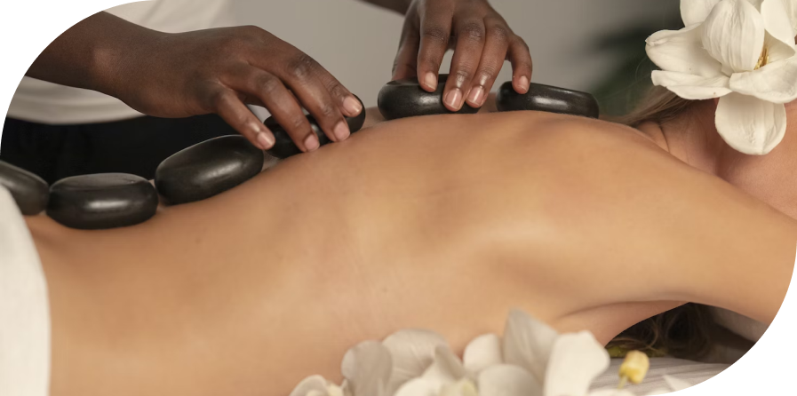

Список статей
Современный взгляд на теорию традиционной китайской медицины
Авторы: Козко А.А., Соколова Т.Е., Центр Традиционной и Восточной Медицины «ПЯТЬ
ЭЛЕМЕНТОВ»
Настоящая статья не является попыткой пересмотра базовых основ теории традиционной
китайской медицины (ТКМ). Это лишь попытка критически переосмыслить представления о
теории китайской медицины с учетом ее феноменологической сущности, т.е. теория ТКМ
была сформулирована на основе наблюдаемых и ощущаемых событий, без понимания сущности
процессов, происходящих на более глубоком уровне, недоступных для изучения и понимания
в то время. Существующее мнение, достаточно широко распространенное в среде западных
специалистов уже использующих методы ТКМ, о передаче знаний китайской медицины от
другой высокоразвитой цивилизации космического или земного происхождения, или по
аналогии с передачей духовных знаний - непосредственно от Создателя, не выдерживает
критики и не поддерживается самими носителями этой традиции в Китае и основано на
неточностях и искажениях теории ТКМ при переводе и последующей ее интерпретации.
Языковый барьер, культурные различия Запада и Востока, образование и особенности
восприятия авторов переводов, привели на начальном этапе переноса знаний из одной
культурной среды в другую к искажению теории китайской медицины, утрате ее целостности
и акценту на более простые, филосовски ориентированные аспекты ТКМ.
Современные китайские учебники и близкие к ним по структуре англоязычные книги по ТКМ,
например «Основы китайской медицины» Джованни Мачоча практически свободны от налета
сакральности и мистификаций, свойственных первым переводам трудов по теории китайской
медицины и в основном сфокусированы на эмпирическом опыте и традиционной
дифференциальной диагностике, практикуемой в настоящее время в Китае. Отношение к
китайской медицине в среде западных специалистов явно неоднозначное, от полного
отрицания до необоснованного преувеличения ее возможностей. Эти крайние точки зрения
обусловлены отсутствием понимания западными специалистами сущности и основ китайской
медицины, а также тем, что современное естествознание давно переросло натурфилософские
основы ТКМ, которые не подтверждаются современными научными данными и естественно
отвергаются специалистами.
У каждой медицины есть своя область применения.

Часто приходится слышать от западных докторов, что понять китайскую медицину можно
только если ты родился в Китае и никогда китайцы не откроют нам секреты китайской
медицины. Сразу вспоминается сказка Аркадия Гайдара «Про военную тайну,
Мальчиша-Кибальчиша и его твердое слово», где Главный Буржуин все пытался понять эту
страну, где даже малыши знают «Военную Тайну» Красной Армии, да так и не понял. Не
надо уподобляться Главному Буржуину и искать секреты там, где их нет. Главная «Военная
Тайна» китайской медицины заключается в сочетании удивительной простоты базовой теории
и огромного опыта систематических наблюдений и анализа симптомов и признаков
заболеваний, а также действия трав и того или иного воздействия на акупунктурные точки
на состояние внутренних органов и организма в целом.
О западной и восточной медицине
Современная западная (конвенциональная) высокотехнологичная медицина - это медицина
БОЛЕЗНЕЙ, поскольку мы интересны для нее только тогда, когда уже болеем и это
подтверждают результаты анализов и других исследований. Но всем известно, что в более
чем 70% случаев первичного обращения в поликлинику ни анализы, ни исследования на
самой современной аппаратуре ничего не выявляют, а самочувствие «не очень». Такое
состояние часто относят к психосоматическим заболеваниям и в лучшем случае Вам
посоветуют отдохнуть, позаниматься спортом или в крайнем случае сходить к
психотерапевту.
Китайская медицина наоборот, изначально ориентирована на сохранение ЗДОРОВЬЯ, на
профилактику, восстановление и лечение психосоматических и хронических заболеваний.
Если пациент древнего китайского лекаря заболевал, он с позором изгонялся из дома как
плохой доктор, не сумевший ПРЕДОТВРАТИТЬ болезнь. Это принципиальное отличие,
определяющее и область их применения.
О главном
Итак, повторим еще раз - китайская медицина основана только на ОЩУЩЕНИЯХ и имеет четко
выраженный феноменологический характер, т.е. теория ТКМ создана на основе анализа
наблюдаемых явлений и ощущений без учета действительно происходящих в организме
процессов более глубокого уровня, которые на тот момент были совершенно непонятны и
неизвестны. Это ключевое утверждение, к которому склоняются все серьезные
исследователи китайской медицины.
Для сторонников версии о непосредственной передаче знаний китайской медицины «сверху»,
по аналогии с религиозными духовными знаниями, цитируем Михаила Санкина, стихотворение
«Три Слона»:
«Земля, как блин, лежит на трех слонах, Которые стоят на черепахе. Уверен в этой
истине монах, А истина уверена в монахе» Верующих не осуждаем и не обсуждаем. Но сами
- не верим. Кстати, не верят в это и сами китайцы.
Базовые принципы оценки состояния организма
Несколько тысяч лет назад китайцы не располагали ни фундаментальными теоретическими
знаниями, ни измерительным оборудованием, и могли полагаться только на свою
наблюдательность и собственные ощущения. Попробуем реконструировать процесс создания
базовых основ китайской медицины:
В те давние времена, да еще и зимой, было непросто добыть что-нибудь для пропитания и
чувство голода и ощущение Холода часто преследовало древних китайцев. Чувство голода
связано с ощущением Пустоты (Недостатка), а насытившись, человек получал удовольствие
от ощущения Полноты (Избытка) и растекающегося по всему телу ощущению Жара. Эти
ощущения - Внутренние, а зимний холод и тепло исходящее от костра, на котором он
готовил пищу - ощущения Наружные. Или по другому - мудрый китаец, сидя на горе,
наблюдая за сменой дня и ночи, прислушивался к собственным ощущениям. Ночью — луна и
ощущение Холода, днем — солнце и ощущение Жара, проголодался — ощущение пустоты
(Недостаток), переел — ощущение полноты (Избыток), то, что происходит внутри, —
ощущение Внутреннее, снаружи — ощущение Наружное.
Вот мы и получили три дихотомии - пары Холод-Жар, Недостаток-Избыток и
Внутреннее-Наружное - шесть базовых диагностических критерия китайской медицины,
используемых для оценки состояния организма и его отдельных органов. Было бы логично
добавить к списку и ощущения Сухости и Сырости, но основатели китайской медицины
отнесли эти два понятия к определению состояния Жидкостей Тела (см. ниже).
Тело человека на 70–80% состоит из жидкости
Три жизненные субстанции - Ци, Кровь и Жидкости тела
Жизнь в те времена была опасная и человек часто видел красную субстанцию, вытекающую
из любой раны на теле, а иногда она «била ключом», если был задет сосуд, по которым
кровь перемещается по телу. Эту субстанцию назвали Кровь. Мертвый воин - холодный и
кровь не течет из его ран, значит ощущение тепла дает движение крови по Сосудам,
проявляемое пульсирующими точками в определенных местах на поверхности тела. Но у
мертвого воина пульсирующие точки отсутствует, кровь застыла и жизнь ушла, а у живого
она двигается, а ощущение движения крови означает Жизнь. И назвал древний китаец это
ощущение движения, ощущение тепла, ощущение жизни, ощущение пульсации - Ци. Ци —
нематериальная, чувственная субстанция, ПРОЯВЛЕНИЕ всех жизненных процессов,
происходящих в организме человека, ассоциируется с Кровью — материальной субстанцией и
основой Ци. Недаром китайцы использовали один и тот же иероглиф «май» для обозначения
каналов распределения Ци и кровеносных сосудов.
В наше время даже школьник знает, что тело человека на 70–80% состоит из жидкости.
Этот факт не мог ускользнуть из поля зрения китайцев, и было введено понятие Жидкостей
Тела, куда входят пот, слюна, мокрота, рвота, сперма, моча а также лимфа (межтканевая
жидкость). Кровь тоже является Жидкостью Тела, но в силу ее заметности и важности ее
функции как материальной субстанции и основы Ци она вынесена основателями китайской
медицины в отдельную категорию, хотя и Жидкости Тела также могут считаться
материальной основой Ци, и это не противоречит основам китайской медицины.
И еще две жизненные субстанции - Шэнь и Цзин
Шэнь - это Дух, Разум, сознание и подсознание - нематериальное проявление жизни, тогда
как Цзин - Жизненная Эссенция, является материальной основой Шэнь, так как при
соединении Эссенций отца и матери зарождается новая жизнь и соответственно и Разум. В
китайской медицине триаду Цзин - Ци - Шэнь называют «Тремя Драгоценностями». Различают
Пред-Небесную, Пост-Небесную Эссенцию и Эссенцию Почек. Пред-Небесная Эссенция - это
смешение Эссенций отца и матери, которая после рождения трансформируется в Эссенцию
Почек, которая подпитывается в течении жизни Пост-Небесной Эссенцией, вырабатываемой
Селезенкой и Желудком из пищи и воды.
Патологические состояния жизненных субстанций
Каждая жизненная субстанция как для организма в целом, так и для отдельного органа
может иметь свои патологические состояния, проявляемое в виде характерных для них
симптомов и признаков, ощущаемых пациентом и доктором.
Ци
Ци может быть в патологическом состоянии Пустоты Ци (недостатка), застоя Ци и
Противотока Ци.
Состояние Пустоты Ци характеризуется легкой одышкой, слабым голосом,
спонтанной потливостью, снижением аппетита, общей слабостью, утомляемостью, слабым
стулом.
Состояние Застоя Ци характеризуется ощущением распирания и блуждающими
болями, депрессией, раздражительностью, частыми сменами настроения, частыми вздохами.
Состояние Противотока (возмущения) Ци. Помним, что носителем Ци являются
Кровь и Жидкости тела, т.е. куда Кровь и Жидкости - туда и Ци. Например, естественное
движение Ци Желудка - вниз, обработанная в желудке пища в виде жидкой субстанции
двигается вниз - это нормальное движение Ци Желудка. А вот рвота, изжога, икота,
отрыжка - характерный пример Противотока Ци - жидкости Желудка поднимаются вверх,
значит и Ци поднимается вверх. Другой пример - это Противоток Ци Легких. В норме
движение Ци Легких направлено вниз и по всему телу с током обогащенной кислородом
крови. Если Ци Легких поднимается вверх - появляется кашель с мокротой, выделения из
носа, чихание, астма.
Кровь
Кровь может быть в патологическом состоянии Пустоты Крови (недостатка), Застоя Крови и
Жара Крови.
Состояние Пустоты (недостатка) Крови характеризуется головокружением,
ухудшением памяти, онемением и покалыванием в конечностях, бессонницей, бледными
губами и бледным языком.
Состояние Застоя Крови. Главный признак - ноющая, колющая локализованная
боль. Другие симптомы - фиолетовые губы и ногти, темный цвет лица, фиолетовый язык.
Состояние Жара Крови. Главный признак - ощущение жара. Другие симптомы -
кожные болезни с красными высыпаниями, жажда, красный язык, Быстрый пульс.
Жидкости тела
Жидкости тела могут быть в патологическом состоянии Сухости, Сырости и Флегмы.
Состояние Сухости (недостатка) Жидкостей тела характеризуются сухостью
кожи, сухостью во рту, носу, сухость губ, сухой кашель, сухой язык, скудная моча,
сухой стул.
Стояние Сырости (отеки). С точки зрения китайской медицины отеки
вызываются переходом жидкостей из их нормальных путей в пространство между кожей и
мышцами.
Состояние Флегмы. Ну а Флегма - это проявление застоя Сырости - густая,
мутная сырость. Флегма - это основа зарождения уплотнений и образований в тканях,
весьма неприятная субстанция, с которой очень трудно бороться.
Эссенция Почек (Цзин)
Эссенция Почек (Цзин) может быть в патологическом состоянии Недостатка и Утечки.
Состояние Недостатка Эссенции Почек характеризуется недостатком
сексуальной активности, ранней сединой и выпадением волос, слабостью в коленях.
Состояние Утечки Эссенции характеризуется истечением семени
(сперматореей), маточными кровотечениями.
Разум (Шэнь)
Разум (Шэнь) может быть в состоянии Беспокойства от Недостатка или Избытка.
Вместилищем Разума в китайской медицине считается Сердце, поэтому патология Разума
будет проявляться в патологии Сердца.
Беспокойство Разума от Недостатка характеризуется тревожностью,
беспокойными снами, сердцебиениями, плохой памятью, пугливостью.
Беспокойство Разума от Избытка характеризуется возбуждением,
беспокойством, бессонницей, жаром, жаждой, красным кончиком языка.
Закон Инь - Ян является китайским вариантом закона о единстве и борьбе
противоположностей в западной культуре.

Инь и Ян
Итак с базовыми критериями диагностики и состояниями пяти жизненных субстанций мы
разобрались. Вы спросите - а где закон Инь - Ян? Эти два слова знают все и в любой
книге о китайской медицине о них говорят как об основном законе мироздания.
На самом деле эти два слова - всего лишь филосовские понятия, категории, используемые
для рассуждений о дуальных (противоположенных, взаимосвязанных и взаимозависимых)
явлениях, введены в обиход примерно в шестом веке до нашей эры филосовской школой Инь
Ян. Можно также сказать, что закон Инь - Ян является китайским вариантом закона о
единстве и борьбе противоположностей в западной культуре.
На интуитивном (медитативном) уровне все дуальные явления могут быть рассмотрены с
точки зрения Инь и Ян. Тогда Холод, Пустота, Внутреннее - это категория Инь, а Жар,
Полнота, Наружное - это категория Ян. Для других явлений эти примеры можно множить
бесконечно, ночь (Инь) - день (Ян) и т.д. и т.п.
В медицине понятию Инь могут соответствовать структура и ткани органов, т.е. Кровь,
Жидкости тела и Цзин, а понятию Ян - функция органов, т.е. Шэнь, Ци и Жизненная
функция. В чем удобство применения этих двух категорий в медицине? Когда мы говорим о
здоровом, гармоничном, сбалансированном органе, мы имеем ввиду соответствие структуры
и тканей органа его функциям, т.е. говорим о балансе Инь и Ян органа. С другой стороны
Инь - это Кровь, Жидкости и Цзин органа, а Ян - это Шэнь, Ци и способность органа
выполнять работу, согревать (Жизненная функция), значит в состоянии баланса достаточно
Крови, Жидкостей и Цзин, а также Шэнь, Ци и Жизненной функции. Дисбаланс
характеризуется недостатком или избытком Инь и/или Ян. Таким образом с помощью всего
лишь двух абстрактных понятий Инь и Ян можно передать различные состояния органа
(всего семь состояний - баланс Инь и Ян, недостаток Инь (Пустой Жар) и избыток Инь
(Полный Холод), недостаток Ян (Пустой Холод) и избыток Ян (Полный Жар), недостаток Инь
и Ян (Пустота), избыток Инь и Ян (Полнота).
Итак, подведем итоги. Шесть основных элементарных ощущений (состояний), это пары Холод
- Жар, Недостаток - Избыток, Внутреннее - Наружное, дополненные парой Инь и Ян и
составляют восемь классических универсальных базовых критериев диагностики в теории
китайской медицины.
Если дополнить этот список состояниями трех Жизненных субстанций - это Ци (Недостаток,
Застой, Противоток), Кровь (Недостаток, Застой, Жар) и Жидкости тела (Сухость,
Сырость, Флегма) - всего девять состояний, а также состояниями Шэнь - Разума
(Беспокойство от Недостатка или от Избытка) и Цзин - Эссенции (Недостаток или Утечка)
мы получим - инструмент дифференциальной диагностики - КОНСТРУКТОР ИЗ ДВАДЦАТИ ОДНОГО
«КУБИКА», который позволяет описать нарушение баланса любого органа или организма в
целом и соответствующих способов коррекции каждого состояния:
Восемь диагностических критериев:
Избыток
Ян
Недостаток
Инь
Наружнее
Холод
Внутреннее
Жар
Патологические состояния Ци, Крови и Жидкости тела:
Ци
Кровь
Жидкость тела
Недостаток
Застой
Противоток
Застой
Недостаток
Жар
Сухость
Сырость
Флегма
Патологические состояния Шэнь и Цзин:
Эссенция (Цзин)
Разум (Шэнь)
Недостаток
Утечка
Беспокойство от недостатка
Беспокойство от утечки
У-Син (Теория Пяти Элементов)
Еще один вопрос неминуемо возникнет - а где же теория У-Син (теория Пяти Элементов),
второй, обязательный элемент в книгах о китайской медицине?
С анатомией в те врмена было слабовато, не то что сейчас, но все равно разобрались и
выделили для начала пять так называемых плотных органов - Печень, Сердце, Селезенка,
Почки, Легкие. А также пять полых органов - Желчный пузырь, Тонкий кишечник, Желудок,
Толстый кишечник и Мочевой пузырь. Почему мы написали названия органов с большой
буквы? Потому, что здесь имеется ввиду не только конкретный орган, а целая
функциональная система, отнесенная к этому органу. Например к Селезенке относится не
только непосредственно селезенка, но и поджелудочная железа, и не только.
Той же школой, которая ввела понятия Инь и Ян, для объяснения взаимодействия
внутренних органов была предложена теория У-Син (пять элементов, пять фаз, пять
движений). Популярность теории У-Син то возрастала, то падала и ей свойственны
множество противоречий, ограничивающих ее использование в медицине. С момента ее
появления она постоянно подвергалась критике, а в современном Китае она вообще
признана ненаучной. Попытка подменить реальное взаимодействие внутренних органов на
физиологическом уровне абстрактной схемой взаимодействия органов по порождающим и
угнетающим связям закономерно пришла к своему логическому завершению, а ее изучение
может быть интересно лишь в историческом плане. Для справки, Япония импортировала
китайскую медицину примерно в седьмом веке, а в процессе адаптации к национальным
культурным традициям она была преобразована в традиционную японскую медицину КАМПО,
что в переводе означает «Путь Хань» - китайский путь. В результате критического
переосмысления теории китайской медицины японцы еще тогда отказались от применения
теорий Инь - Ян и У-Син, посчитав их спекулятивными и не соответствующими
действительности. В рационализме и здравом смысле японцам не откажешь, стоит
прислушаться и к их мнению.
Причины болезней
Что такое болезнь и почему человек болеет, в чем причина? Вопрос актуален и сейчас, а
тогда и тем более. В состоянии Здоровья человек находится в состоянии гармонии и
баланса как с окружающей средой, так и внутренней гармонией всех органов. Здоровый
человек активен, полон желаний и планов, глаза «горят», нет ощущения тела, оно лишь
инструмент исполнения желаний, нет симптомов и признаков дисгармонии. Когда все органы
человека находятся в состоянии баланса, он здоров, а вот появление симптомов и
признаков свидетельствует о нарушении этого баланса, а это и есть болезнь с точки
зрения китайской медицины.
В состоянии Здоровья человек находится в состоянии гармонии и баланса как с окружающей
средой, так и внутренней гармонией всех органов.

Если спросить ребенка, кто виноват в том, что мы болеем? То конечно же, на первом
месте ответов в опросе будет плохая погода! Древние китайцы, как дети, тоже были того
же мнения. Поэтому первая очевидная причина заболеваний в те древние времена стала
плохая погода - Холод, Жар, Сухость, Сырость, Ветер и Летний Зной (Огонь). Назовем их
Наружными Патогенными факторами. Отклонения погоды от нормы всегда вызывали вспышки
заболеваний. Наружный Патогенный фактор атакует Наружный слой нашего тела (кожа, мышцы
и сухожилия) вызывая различные, в том числе простудные заболевания. Если его вовремя и
быстро не изгнать, он проникает глубже и становится Внутренним Патогенным фактором,
который поражает внутренние органы.
Вторая, менее очевидная тогда, но наверное самая актуальная сейчас причина - это наши
эмоции - Гнев, Радость, Грусть, Тревога, Задумчивость, Страх и Шок. Еще древние
заметили, что человек, одержимый какой либо одной эмоцией неизбежно начинает болеть.
Ну и третья, не менее актуальная в наше время - образ жизни - физические и умственные
перегрузки, недостаточная физическая активность, чрезмерная сексуальная активность,
погрешности в диете.
Ну и третья, не менее актуальная в наше время - образ жизни - физические и умственные
перегрузки, недостаточная физическая активность, чрезмерная сексуальная активность,
погрешности в диете.
Что же происходит, когда мы заболеваем?
Первое. Наружные или Внутренние Патогенные факторы, воздействует на три основные
жизненные субстанции - Ци, Кровь и Жидкости тела и приводят к нарушению их движения и
распределения по телу.
Второе. Нарушение движения и распределения Ци, Крови и Жидкостей тела приводит к
нарушению баланса в организме и в его отдельных органах.
Третье. Нарушение баланса приводит к появлению симптомов и признаков, характерных для
этого дисбаланса.
За несколько тысяч лет существования и развития китайской медицины был накоплен
колоссальный опыт в анализе причин и взаимосвязи дисбаланса в конкретном органе или
системе и связанных с ним симптомов и признаков.
Диагностика
Что такое болезнь и почему человек болеет, в чем причина? Вопрос актуален и сейчас, а
тогда и тем более. В состоянии Здоровья человек находится в состоянии гармонии и
баланса как с окружающей средой, так и внутренней гармонией всех органов. Здоровый
человек активен, полон желаний и планов, глаза «горят», нет ощущения тела, оно лишь
инструмент исполнения желаний, нет симптомов и признаков дисгармонии. Когда все органы
человека находятся в состоянии баланса, он здоров, а вот появление симптомов и
признаков свидетельствует о нарушении этого баланса, а это и есть болезнь с точки
зрения китайской медицины.
На основании симптомов и признаков, выявляемых в процессе диагностики - осмотра,
опроса, выслушивания и вынюхивания, а также ощупывания пациента, доктор устанавливает
рисунок заболевания (паттерн или несколько паттернов) и определяет характер и место
дисбаланса.
Характер дисбаланса определяется по восьми диагностическим критериям и состоянию Ци,
Крови и Жидкостей Тела с указанием локализации проблемы (в определенном органе) и
характерных симптомов и признаков, что дает нам рисунок заболевания (паттерн, или
синдром).
Пример описания дисбаланса органа (паттерн) в китайской медицине выглядит следующим
образом:
- Недостаток Ци Селезенки -сталость, плохой аппетит, слабый стул.
- Застой Крови Сердца -острая боль в груди, синюшные губы, пурпурно-красный язык.
- Недостаток Инь Почек-ломота в пояснице, ночная потливость.
- Сырость-Жар Желчного Пузыря- ощущение полноты в подреберьях, горький привкус во рту, толстый желтый клейкий налет на языке.
Лечение
Устранение причин заболеваний - (Наружные Патогенные факторы, семь эмоций, диета и
образ жизни) — это задача пациента, а вот восстановление баланса является ключевой
задачей лечения в китайской медицине.
Главный принцип лечения - при состоянии Холода надо согревать - при состоянии Жара
нужно охлаждать, Недостаток надо восполнять, Избыток надо выводить. Как только доктор
поставил диагноз с использованием дифференциальной диагностики по 21 состоянию, сразу
понятна стратегия лечения - всего 21 возможное действие или их комбинация по коррекции
состояния.
Траволечение
Для лечения и раньше использовались травы, и древние знахари замечали, что отвар
некоторых трав согревает, а других - охлаждает, что отвар сладких и кислых трав
тонизирует и быстро убирают ощущение Пустоты, а горьких и острых вызывают
потоотделение или рвоту, стул или мочеиспускание (дренирование), а также рассеивает
Застой и облегчают ощущение Полноты. Отвар других трав просто гармонизирует состояние
и убирает противоречивые ощущения. В соответствии с этими наблюдениями со временем
были сформулированы восемь базовых методов лечения:
Потоотделение, Рвота, Дренирование (Послабление), Гармонизация, Согревание,
Охлаждение, Тонизация и Рассеивание.
Для каждой травы древние доктора определили основные характеристики, которые помогали
им правильно подобрать траву для лечения: Первая - Природа - Охлаждающая или
Согревающая, Вторая - Вкус - Сладкий и Кислый - восполняющие, Горький и Острый -
выводящие, Соленый - растворяющий, Третья - Тропность - Влияние на соответствующую
функциональную систему, Четвертая - Действие на основные Жизненные субстанции, Пятая -
Симптомы, которые устраняются приемом этой травы. А еще они разложили все травы по
«полочкам» в соответствии с восемью методами лечения, а также действием трав на
основные жизненные субстанции (Ци, Кровь и Жидкости тела).
Постепенно, по мере накопления опыта, древние доктора научились сочетать различные
травы вместе, появились излюбленные сочетания, хорошо помогавшие Пациентам в различных
состояниях. Сочетания назвали Прописями. Сначала это были простые сочетания из двух
трав, потом из трех, далее стали комбинировать «двойки» и «тройки» и научились
составлять сложные Прописи. Появилась своя система составления Прописей, где был
Главный компонент (трава или несколько трав), решавший основную задачу Прописи, его
Заместитель, помогающий решать главную задачу, Помощник, основной задачей которого
было ослаблять негативный эффект основных трав на другие органы, и Проводник,
облегчающий решение задач всем остальным травам.
Постепенно, по мере накопления опыта, древние доктора научились сочетать различные
травы вместе, появились излюбленные сочетания, хорошо помогавшие Пациентам в различных
состояниях.
Именно из анализа системы категоризации трав становится ясной и понятной вся сущность
китайской медицины, ведь что диагностируем, то и лечим, т.е. каждому состоянию
соответствует свое действие, а как мы определили выше, состояний всего двадцать одно,
а значит и действий необходимо тоже двадцать одно. В этом легко убедиться, достаточно
открыть любой справочник по лекарственному растительному сырью или готовым рецептам
(прописям) китайской медицины, где и травы и прописи распределены по разделам и
подразделам по характеру их действия, которых действительно двадцать одно, а также
выделены в отдельные разделы отдельные категории прописей - кровеостанавливаюшие,
приводящие в сознание, убирающие застой пищи и убивающие паразитов прописи.
Точное соответствие прописи текущему состоянию пациента - подобие, как и в гомеопатии,
часто приводит к ошеломительным результатам в виде улучшения состояния сразу после
первого приема отвара. Готовить отвар в домашних условиях хлопотно и при нынешнем
темпе жизни практически нереально. Еще китайцы стали производить первые медовые
пилюли, представляющие собой мелко измельченные в ступе травы, перемешанные с
небольшим количеством меда.
Рациональные японцы первые начали производить концентрированные пилюли из
лекарственных трав путем многократного отваривания и упаривания их до определенной
консистенции. В современных пилюлях степень концентрации соответствует 5-ти, что
позволяет в такое же количество раз снизить суточную дозировку. За последние два года
на российском рынке появились сертифицированные классические растительные препараты,
только в профессиональной серии фитопрепаратов "ФОРМУЛА ПЯТИ ЭЛЕМЕНТОВ" их
представлено около 60-ти. Удобная цветная и цифровая маркировка фитопрепаратов этой
серии позволяет легко ориентироваться в выборе препарата, соответствующего Вашему
состоянию.
Акупунктура
Акупунктура эволюционировала несколько тысяч лет и продолжает развиваться. Любая
научная теория опирается на две основных составляющих: эмпирические факты и
объяснительную модель. За тысячелетия китайцы накопили огромное количество
эмпирических фактов о взаимосвязи различных частей поверхности человеческого тела
между собой и с внутренними органами.
Именно в попытке объяснить эту взаимосвязь древние лекари сформулировали теорию
«Каналов» (Цзин-Ло), основанную на гениальном для того времени ПРЕДПОЛОЖЕНИИ древних
китайцев, что есть некая неведомая ОСНОВА всем жзненным процессам в организме,
названная Ци. При этом произошел переход от понятия Ци, как ОЩУЩЕНИЯ (проявление о
отражение всех жизненных процессов в организме), к понятию Ци, как ОСНОВЫ этих
процессов. Именно на это филосовской идее, где Ци является основой всех процессов в
организме, и разработана в дальнейшем вся теория ТКМ. Теория каналов стала
"краеугольным камнем" теории ТКМ. В рамках этой теории Ци двигается по особым каналам,
соединяющим акупунктурные точки, воздействие на которые приводит к восстановлению
баланса в соответствующих органах.
Проведенные в Китае и других странах, в том числе и России исследования в течении
последних 50 лет по подтверждению традиционной теории «каналов» и поиску их
анатомического коррелята ни к чему не привели, несмотря на огромные интеллектуальные и
финансовые ресурсы, вложенные в эти исследования. С другой стороны, проведенные в
Китае в течении 20 лет скрупулезные исследования и анализ первоисточников и материалов
археологических раскопок (в Институте Акупунктурных Исследований при Академии ТКМ в
Пекине под руководством профессора Лунсян Хуан) позволили реконструировать процесс
зарождения китайской медицины, который подтверждает ее феноменологическую сущность, и
высказать «крамольное» предположение, что теория «каналов» безвозвратно устарела и
является сейчас тормозом в развитии ТКМ.
Первые акупунктурные точки были выявлены при осмотре пациентов как пульсирующие точки
(на самом деле это были места поверхностного расположения артерий), которую, по мнению
древних врачей, вызывала жизненная сила, названная Ци. Наличие или отсутствие Ци
(пульсации) определяло, жив пациент или мертв. Считалось, что все части тела связаны
каналами или сосудами Ци. Пальпацией пульсирующих точек по всему телу врачи
диагностировали состояние больного. Поскольку пульсация чувствовалась не по всей длине
канала, а только в определенных точках, врачи соединяли их в воображаемый канал, тем
самым «дорисовывая» его невидимую часть. Не даром иероглиф «май», обозначающий канал,
также обозначает и кровеносный сосуд. Разумеется, в разные времена разные врачи
соединяли точки по-разному, и отсюда – все многообразие теорий каналов и меридианов.
Воздействие на эти точки приводило к облегчению состояния пациентов и восстановлению
баланса.
В Трактате Желтого Императора о Внутреннем (Хуан Ди Нэй Цзин),
составленном приблизительно между 206 г. до н.э. и 220 г. до н.э. были обобщены
существующие до этого многочисленные теории, основанные на движении Ци по каналам.
Трактат стал знаковым событием в истории древней медицины и по сей день используется
как учебник по акупунктуре по всему миру. После появления Трактата акупунктура не
остановилась в своем развитии: число теорий, точек и каналов все увеличивалось. Когда
клинические факты не соответствовали ни одной существующей теории, ими могли
пренебречь, чтобы не ставить под сомнение всю теорию. Новые теории должны были не
противоречить старым: у китайцев это выражается пословицей «Обрежь ногу, раз обувь
мала». Та классическая акупунктура, которая дошла до нас, представляет собой смесь
ценных теорий и огромного клинического опыта с ложными представлениями и неполными
объяснительными моделями.
В настоящее время ситуация выглядит нелепо. Ученые применяют последние технологические
и научные достижения в исследовании физиологических и молекулярных механизмов
акупунктуры уже более 50 лет, но студенты и специалисты, которые хотят изучать
акупунктуру, все еще учатся по Трактату Желтого Императора и учебникам, написанным на
его основе.
Теория «Каналов» (Цзин-Ло) - выполнила свою историческую роль, сохранив огромный
эмпирический опыт предыдущих поколений китайских докторов, но сейчас она сдерживает
развитие акупунктуры, которой нужна новая теория, новая объяснительная модель.
Главная ценность китайской акупунктуры и об этом говорят сами китайцы - это
колоссальный эмпирический опыт, подтверждающий связь между отдельными точками на
поверхности тела между собой и с внутренними органами. Эта связь проявляется при том
или ином воздействии на точку изменением состояния внутренних органов в соответствии с
21 критерием дифференциальной диагностики и устранением характерных для этого
состояния симптомов и признаков.
Классическая акупунктура, которая дошла до нас, представляет собой смесь ценных теорий
и огромного клинического опыта с ложными представлениями и неполными объяснительными
моделями.
Несколько слов о рефлексотерапии
Понятно, что период становления рефлексотерапиии в стране был не простым (а началось
все в 1957 году) и сейчас не время и не место разбираться, почему мы как всегда
оказались «впереди планеты всей». Из целостной системы врачевания был взят только один
метод - акупунктура. Почему, как всегда это у нас бывало, доминирующими были идеология
и революционные методы: «Весь мир насилья мы разрушим до основанья, а затем. Мы наш,
мы новый мир построим...». Попытка заменить дифференциальную диагностику на
инструментальные методы диагностики, явилась дополнительным стимулом к изучению
разнообразных механизмов акупунктуры, но, к сожалению, целостной, исчерпывающей,
научно-обоснованной теории, основанной на неврологии, так и не было создано, а участие
нервной системы (рефлекторные реакции) является не единственным и как показывает
практика далеко не решающим механизмом лечебного эффекта акупунктуры. В итоге в
рефлексотерапии не осталось и следа от традиционной дифференциальной диагностики,
которая вместе с огромным эмпирическим опытом и является главной ценностью китайской
медицины и определяет эффективность лечения. Именно по этой причине часто приходится
слышать расхожую и обидную для рефлексотерапевта фразу: «эффективность иглоукалывания
падает обратно-пропорционально квадрату расстояния от Пекина».
В «сухом остатке» в «багаже знаний» новоиспеченного рефлексотерапевта имеется
рецептурный справочник точек для укалывания по нозологиям, описание топографии и
симптоматики этих точек, скромные рекомендации по Месту, Методу и Моменту воздействия
и представление о философских категориях Инь и Ян и теории У-Син. А дальше он один на
один с пациентом, правда вооруженный инструментальными средствами диагностики по
Фоллю, по Накатани, по Акабане, лечит «недостаток» или «избыток» Ци в «канале» и
методом проб и ошибок набирает клинический опыт. Хотя в теории ТКМ, основанной на
богатом эмпирическом опыте утверждается, что проблемы акупунктурного канала могут быть
связаны, а могут и не быть связаны с проблемами связанного с каналом внутреннего
органа. Аналогично и для внутреннего органа, проблемы которого могут отражаться или
нет на акупунктурном канале.
Складывается противоречивая ситуация, с одной стороны в современной рефлексотерапии
используются самые последние достижения и технологии в исследовании физиологических,
молекулярных и биоинформационных механизмов акупунктуры, с другой стороны - лечение
недостатка и избытка Ци а «виртуальном» канале, хотя и с применением инструментальных
средств диагностики. Удивительное сочетание современных технологий с устаревшими
теоретическими моделями! И в итоге, более 90% специалистов, если не бросают это
занятие - рефлексотерапию, то приходят к выводу о необходимости изучать традиционную
методологию дифференциальной диагностики и конечно использовать весь богатейший
эмпирический опыт китайской медицины.
К сожалению, до сих пор современная физика не добралась до понимания полевой
структуры, ассоциируемой с понятием Ци в китайской медицине. С другой стороны, с
современной точки зрения рассуждения о Ци в китайской философии и медицине не
соответствуют современному уровню развития естествознания.
Основываясь на понимании феноменологической сущности китайской медицины и
представлениях современной квантово-волновой физики, последовательное движение Ци по
каналам носит условный, схематический характер. Более реалистична выглядит идея
акупунктурных точек - как узлов в квантово-волновом каркасе человеческого тела,
который складывается из излучения каждой клетки нашего организма. Эта идея излучения
впервые была высказана русским ученым Петром Гаряевым при исследовании генома
человека. Подтверждение того, что каждая клетка содержит полную информацию об
организме - это возможность клонирования. Это также объяснят наличие «систем
соответствия» в различных зонах тела.
С учетом всего выше сказанного можно предположить, что акупунктурный канал - это по
сути система классификации акупунктурных точек, такая же категория, как Инь и Ян и
теория У-Син. Прав был француз Сюлье де Моран, назвав его меридианом - условной
линией, элементом системы координат.
Безусловно, российские рефлексотерапевты внесли огромный вклад в исследование
механизмов действия акупунктуры на нейрофизиологическом, биохимическом и биофизическом
уровнях и теоретически готовы предложить новые теории и объяснительные модели в
акупунктуре. Только не надо отбрасывать ценный, наработанный тысячелетиями
эмпирический опыт и гениальную в свой простоте традиционную дифференциальную
диагностику, что дает им возможность использовать в своей лечебной работе не только
акупунктуру, но и другой метод традиционной китайской медицины - фитотерапию.
Несколько слов о рефлексотерапии
Итак, оглянемся назад и посмотрим, что мы натворили:
- Свели теорию Инь-Ян к двум банальным категориям и к аналогу закона о единстве и борьбе противоположенностей в западной культуре.
- Закон У-Син расценили как попытку подмены реального взаимодействия внутренних органов на физиологическом уровне абстрактной схемой взаимодействия органов по порождающим и угнетающим связям и признали ненаучным.
- Теорию «каналов» (Цзин-Ло), краеугольный камень ТКМ, посчитали сыгравшей свою историческую роль и обозвали «тормозом» в дальнейшем развитии акупунктуры (рефлексотерапии).
- Низвели понятие Ци до уровня ощущений, уж коли не знаем, что это есть на самом деле.
- Досталось и рефлексотерапии за пренебрежение к традиционной дифференциальной диагностике и лечение «виртуальных каналов».
И что же осталось у нас от китайской медицины:
- Гениально простая система оценки состояния гомеостаза (баланса) организма и его отдельных органов, с помощью всего лишь 21 критерия дифференциальной диагностики, которые определяет и состояние и действие по его коррекции, единые как для траволечения, так и для иглоукалывания и других методов воздействия.
- Согласно теории китайской медицины считается, что болезнь – это нарушение равновесия в одной или нескольких функциональных системах, что проявляется симптомами и признаками, свидетельствующими о нарушении этого баланса, которое описывается с помощью 21 критерия дифференциальной диагностики. За несколько тысяч лет существования и развития китайской медицины был накоплен колоссальный опыт в анализе взаимосвязи дисбаланса в конкретном органе (описанного на основе 21 критерия) и связанных с ним симптомов и признаков.
- Отработанный тысячелетиями опыт использования отдельных трав и их композиций для коррекции состояния, опять же на основе 21 критерия дифференциальной диагностики.
- Бесценный эмпирический опыт, подтверждающий связь между отдельными точками на поверхности тела между собой и с внутренними органами. Эта связь проявляется при том или ином воздействии на точку изменением состояния внутренних органов в соответствии с 21 критерием дифференциальной диагностики и устранением характерных для этого состояния симптомов и признаков.
Если вы дочитали эту статью до конца, вам будет интересно ознакомиться со следующей статьей